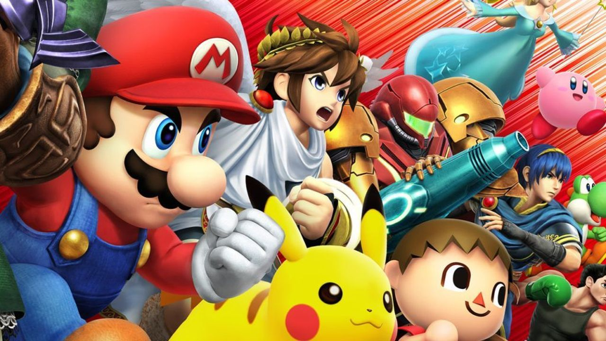

What is Super Smash Bros?

Competitive
The second installment, Super Smash Bros. Melee sparked a competitive scene that still thrives today with prize pools that reach over $20,000. Early tournaments were extremely informal and usually were hosted in people's homes, or the occasional game store with rules still being disputed between regions such as the East and West Coast. As the competitive scene rose, tournament sponsors such as the MLG (Major League Gaming) put a lot of focus on Smash Bros Melee during the years of 2006 though 2007, offering the top players hefty prize earnings for the top players. Players during those years called this the "Golden Age" of competitive Super Smash Bros. Events and professional players today recieve attention from a wide variety of sponsors such as HTC, ASUS, and even Nintendo themselves. Players can even make salary from attending bigger tournaments with the top player today making a total of $113,246 from tournament earnings. To this day, almost every installment of this series is practiced and played competitively. To learn more about the history of competitive Super Smash Bros. visit the community tab to the Smash Bros documentary or visit the melee history wesite: http://www.meleeinfo.com/the-history.html
Why I like Competitive Super Smash Bros
- The community is very friendly
- Easy to pick up with friends and play for fun
- Anybody can participate in tournaments
- Offers a wide variety of gameplay
- Has a lot of beloved video game characters